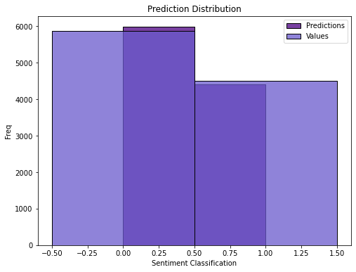
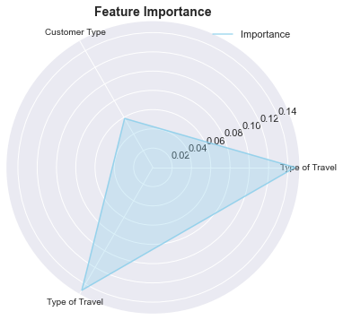
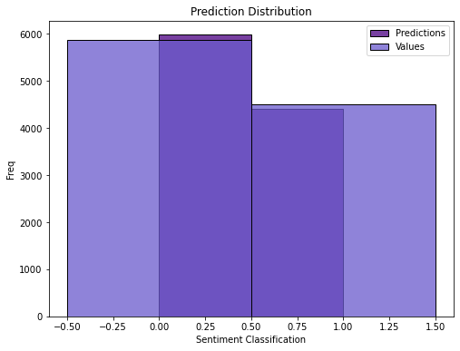
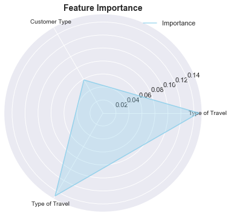
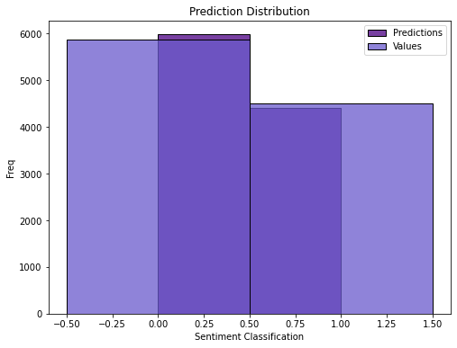
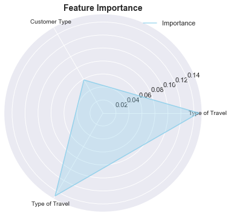
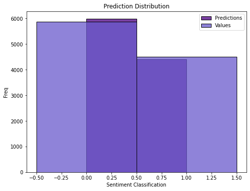
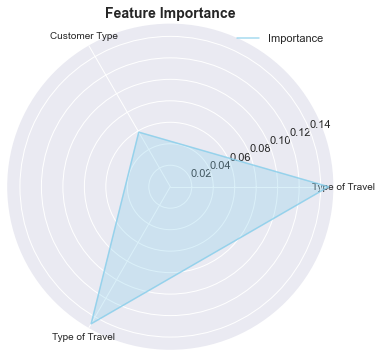
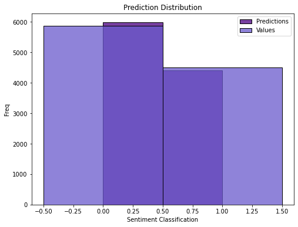
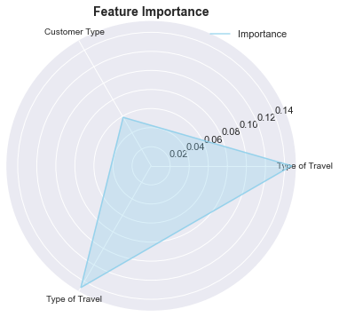

Airline Passengers
Challenges
What factors lead to customer satisfaction for an Airline?
Make a sentiment prediction > 95%
Some Analysis
Satisfaction and others
Age and others
Flight Distance and others
Predictions
Accuracy
96.0%
Precision
96.5%
Recall
94.3%
 
 






